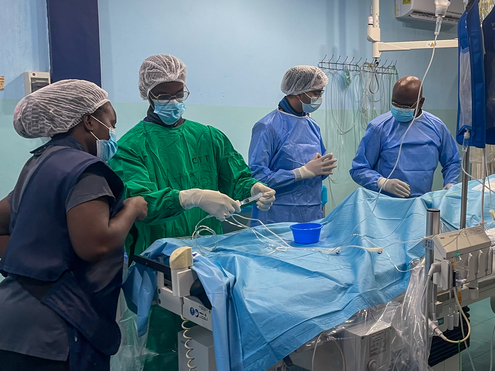

notes from accra
I am spending the month of February in Accra, Ghana, for a global health rotation at Korle Bu Teaching Hospital affiliated with University of Ghana Medical School. Both Ellelan and I came here together; she's rotating on cardiothoracic surgery, and I'm on the internal medicine wards. On this page, I'll post notes and photos from the experience.
NOTE 3: PAY TO PLAY
Friday February 16, 2024
“All clear...?” After a quick glance around the room, the cardiologist places their paddles on the patient’s chest and administers 90 J of electrical energy to her heart. “Ahh!” The previously silent, motionless patient yelps...continue reading full post.

NOTE 2: HARMATTAN
Thursday February 8, 2024
The air quality in Accra currently ranks as the worst in the world right now, reaching over 300 AQI this week. Just walking outside for a few minutes leads to a sore throat and watery eyes. Pollution paints the sky a flat concrete grey, erasing away the clouds and rendering the sun into a wispy orange-red orb...continue reading full post

NOTE 1: FIVE DAYS IN
Saturday February 3, 2024
We arrived in Accra Tuesday night and spent the evening settling in to our place. Ellelan and I are renting an AirBnB near the Labone and La neighborhoods in Accra, which puts us about a 25 minute drive away from the hospital but closer to the downtown and beach...continue reading full post.